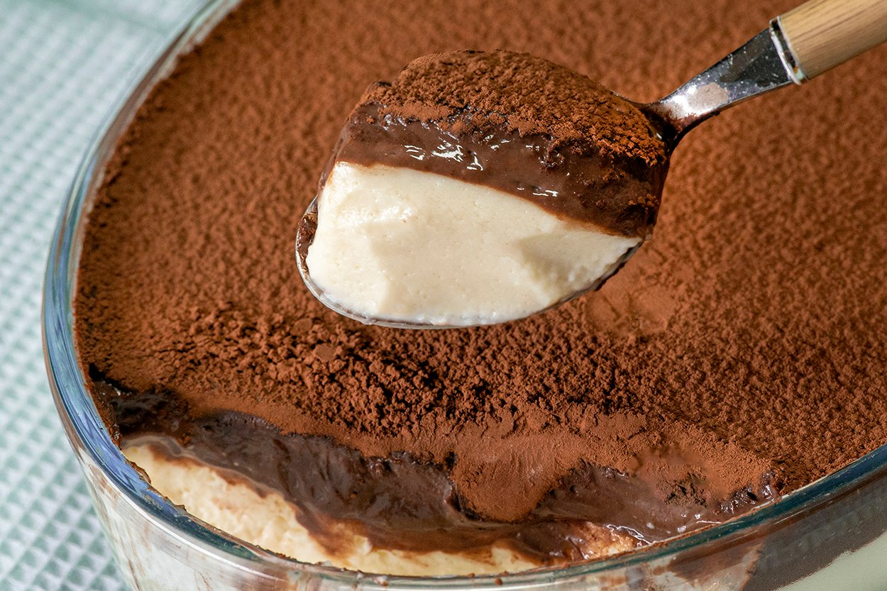

Sütlaç, revani, irmik helvası, muhallebi, tiramisu, kalburabastı, trileçe... Sütlüsü şerbetlisi, fırında kızaranı, ocakta pişeni derken liste uzar da gider. Aklınıza hangi tatlı geldiyse, tam ölçülü tarifiyle burada karşılaşabilirsiniz. İster geleneksel lezzetler ister yeni tatlar; aradığınız hangisi olursa olsun, püf noktalı tariflerle tam kıvamında tatlılar hazırlayabilirsiniz.
Supangleli Tavuk Göğsü Tarifi

Tarifin alındığı siteye ulaşmak için görselin üstüne veya buraya tıklayabilirsiniz.
Klasik tavuk göğsü tarifi en klasik sütlü tatlılardan biri. Peki bu müthiş lezzeti bir diğer sütlü tatlı olan
supangle ile birleştirip bambaşka bir lezzet cümbüşü hazırlamaya ne dersiniz? Elbette ki supangle
tarifinin orijinalinde içerisine kakaolu kek, tavuk göğsünün orijinalinde de tavuk parçaları kullanılıyor.
Biz kolay ve pratik hali olan yalancı tavuk göğsü tarifi ve kakao kreması kullandık.
Öyle güzel, öyle enfes bir tarif çıktı ki ortaya, bundan sonra canınız tatlı çektiğinde eminiz ki bu tarif
aklınıza gelecek.
Kıvamı, tadı ve görüntüsüyle tatlı krizlerinde akla gelecek güzellikte bu tarifi hemen hazırlamak
istiyorsanız sizi aşağı doğru alalım. Şimdiden ellerinize sağlık!
Lezzet ikilisi supangleli tavuk göğsünün videosunu aşağıya bırakıyoruz, afiyet olsun!
Supangleli Tavuk Göğsü Tarifi (Video için buraya tıklayınız.)
| Kaç Kişilik |
Hazırlama Süresi |
Pişirme Süresi |
| 4 Kişilik |
25 Dakika |
25 Dakika |
Supangleli Tavuk Göğsü Tarifi İçin Malzemeler
- Tavuk Göğsü İçin
- 125 gram tereyağı
- 1 su bardağı un
- 1 litre süt
- 1 su bardağı toz şeker
- Supangle İçin
- 500 gram süt
- 1/2 su bardağı toz şeker
- 1,5 yemek kaşığı un
- 1 yemek kaşığı nişasta
- 2 yemek kaşığı kakao
- 1 adet yumurta sarısı
- 60 gram bitter çikolata
- Üzeri İçin
Supangleli Tavuk Göğsü Tarifi Nasıl Yapılır?
- Tavuk göğsünü hazırlamak için, bir tencerede tereyağını eritin. Üzerine unu ilave edip 2-3 dakika kadar kavurun.
- Kavrulan unun üzerine süt ve toz şekeri ekleyip, sürekli olarak karıştırarak pişirin
- Kıvamı koyulaşmaya ve kaynamaya başladıktan sonra ocaktan alıp bir kaseye aktarın ve oda sıcaklığında bekletin.
- Supangleyi hazırlamak için, ayrı bir tencereye süt, toz şeker, un, nişasta, kakao ve yumurta sarısını ekleyin ve sürekli olarak karıştırarak koyulaşana dek pişirin.
- Pişen karışımı ocaktan alın ve sıcakken doğranmış bitter çikolata parçalarını ekleyip pürüzsüz bir kıvama gelene dek karıştırın.
- Oda sıcaklığında beklettiğiniz tavuk göğsünü pürüzsüz ve ağdalı bir hale gelene kadar, yaklaşık 5 dakika mikserle çırpın.
- Hazırladığınız tavuk göğsünü tabanını suyla ıslattığınız bir servis kabına boşaltın. Üzeri kabuk olana dek oda sıcaklığında bekletin.
- Üzeri kabuklaşmış olan tavuk göğsünün üzerine supangleyi dökün ve güzelce yayın. Buzdolabında soğuyana dek, yaklaşık 3-4 saat bekletin.
- Servis etmeden önce süzgeç yardımıyla üzerini kaplayacak kadar kakao serpiştirin.
- Supangleli tavuk göğsü hazır.
AFİYET OLSUN